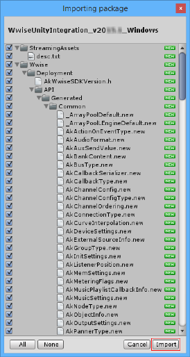
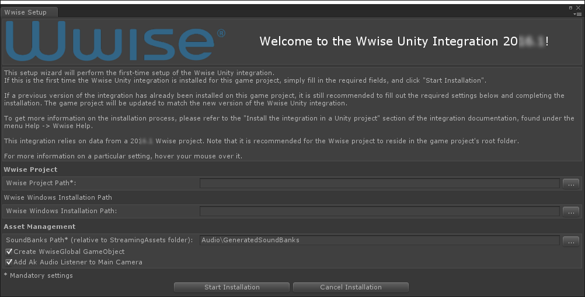

|
| Warning: Recommendations Before you begin:
- Make sure to back up your Unity project.
- For a clean installation:
- Before you install the Wwise integration, you need to make sure your Unity project is in a state where it can compile successfully without any errors. (Warnings are OK.)
- It is strongly recommended to perform the installation from a freshly opened Unity Editor.
|
The installation procedure assumes that you have created a Wwise project already. Place your Wwise project outside the Assets folder to avoid burdening the Unity Asset Manager. The Unity-Wwise Integration installs automatically when you import the Unity package and also automatically links your Unity project with your Wwise project.
|
| Note: For a clean installation, it is strongly recommended to install a Wwise Integration Package from a freshly opened Unity Editor. |
- Launch the Unity Editor and open your Unity project. Do not play/preview any scene.
- Start by importing the Wwise Unity Integration UnityPackage file for your authoring platform version, "WwiseUnityIntegration_WwiseVersionNumber_Mac" or "WwiseUnityIntegration_WwiseVersionNumber_Windows". Double-click the WwiseUnityIntegration.unitypackage file, or in Unity, use the Assets > Import Package > Custom Package… menu.
|
| Note: This step is crucial if you want to preview your game in the Unity Editor. If members of your team work on Unity Mac and others on Windows, make sure to install both the "Mac" and "Windows" Unity packages. |
- Make sure that all assets from the package are selected, then click Import.

|
| Note: During the import, expect to see some errors, warnings, and other messages generated by Unity in the console. This is normal. |
- After the import, the Wwise Setup dialog appears.

- Follow the instructions in the dialog:
- Enter the Wwise Project Path in the Wwise Project section.
- Enter the Wwise Windows Installation Path (or Wwise Application on the Mac) if you wish to generate the SoundBanks from the Wwise Picker.
- If it's your first Unity project used along with Wwise, we suggest to leave the default Asset Management options enabled. Otherwise, you may change the Asset Management option to suit your video game needs.
- Click
Start Installation.
- The Wwise Integration in Unity will be performed.
|
| Note: During installation, expect to see some errors, warnings, and other messages generated by Unity in the console. This is normal. |
- Once complete, a "WwiseUnity integration installation completed successfully" entry will be displayed in the Unity Console.
- If you have multiple platforms to support, repeat the process with the other platform UnityPackage. The Wwise Setup dialog is only displayed during the first import of the new Wwise Unity Integration. The dialog won't be displayed during the subsequent platforms installation, but the new platform will be installed properly.
|
| Note: If some members of your team work on Unity Mac and others on Windows, make sure to install both the "Mac" and "Windows" UnityPackage. |